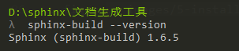

环境安装¶
- 参考文档
- Sphinx是由Python编写的，安装Sphinx之前需要安装下列依赖环境：
Linux安装¶
基本上所有的Linux操作系统都会自带Python环境，如果要安装其它版本的Python环境，可以参考 Python3官方安装文档
基本上所有的Linux发行版在它们的包仓库都有Sphinx安装包，通常包名叫做 python-sphinx , python-Sphinx 或者 sphinx 。
需要注意的是，这里也有两个带有Sphinx关键字的其它安装包：CMU Sphinx (语音识别工具)、Sphinx search (文本搜索数据库)
- Debian/Ubuntu安装Sphinx
$ apt-get install python-sphinx
- RedHat/Centos安装Sphinx
$ yum install python-sphinx
当在命令行输入命令 sphinx-build --version , 如果能够回显Sphinx的版本信息，说明Sphinx环境安装成功

Mac安装¶
Mac操作系统都会自带Python环境，如果要安装其它版本的Python环境，可以参考 Python3官方安装文档
- brew 安装
$ brew cask install sphinx
- MacPorts 安装
$ sudo port install py27-sphinx
$ sudo port select --set python python27
$ sudo port select --set sphinx py27-sphinx
- pip 安装(pip是python2自带;pip3是python3自带)
$ pip install sphinx
$ pip3 install sphinx
- anaconda 安装(anaconda是一个python开源工具自带了Sphinx环境，所以只需要安装anaconda即可)
当在命令行输入命令 sphinx-build --version , 如果能够回显Sphinx的版本信息，说明Sphinx环境安装成功
Windows安装¶
- Windows操作系统没有自带Python环境，可以参考
- 注意：Windows安装Python最好将其安装目录添加到window环境变量PATH中，利于命令行随处执行
python2安装后会自带pip工具；python3安装后会自带pip3工具
接下来使用pip工具安装Sphinx环境
$ pip install sphinx
$ pip3 install sphinx
- 也可以使用
anaconda安装Sphinx环境，anaconda是一个python开源工具自带了Sphinx环境，所以只需要安装anaconda即可
当在命令行输入命令 sphinx-build --version , 如果能够回显Sphinx的版本信息，说明Sphinx环境安装成功